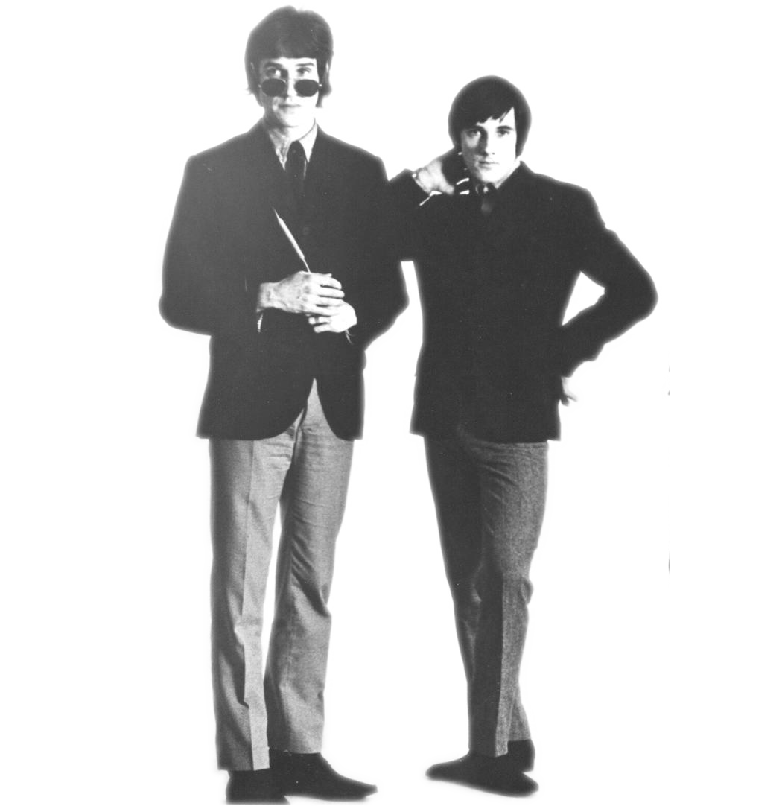

Rock n' roll died in 1958...
And came back five years later...
...with a British accent.
No song currently playing.
John Lennon
Rhythm Guitar, Vocals
In 1957, John's previously estranged mother bought him his first guitar and he immediately formed a band, even while his aunt told him he would never make a living out of it. When The Beatles started out, John was looked towards as a leader figure in the group, being the most outspoken and daring. After The Beatles broke up in 1969, John continued on with a fairly successful solo career. In December 1980, he was shot and killed in New York by a crazed fan named Mark David Chapman, much to the dismay of America. The song below is in memory of his mother, Julia.
Interview with John Lennon,
1964
Ringo Starr
Drums, Vocals
Born Richard Starkey in Liverpool, Ringo was well-known for his easy-going personality in The Beatles. He started out playing percussion in a skiffle band, and was asked to join The Beatles to replace former drummer Pete Best. Though Starr only wrote a few songs for The Beatles, his comedic and acting talents shined in the band's films A Hard Day's Night and Help!. After The Beatles, Ringo went onto record solo music as well as an acting career. The song below was written by Lennon/McCartney, but Ringo pulls it off effortlessly with his airy vocals.
THE BEATLESWith A Little Help From My Friends
Clip from 'A Hard Day's Night',
1964
Paul McCartney
Bass, Vocals
Showing an early gift for music and art, Paul was performing music at a local church when he met John Lennon and decided to join The Quarrymen. Known among fans as "the cute one", Paul, along with Lennon, wrote the majority of Beatles tunes. He could play over three dozen different instruments. After the band's breakup, Paul went on to have a rather successful solo career both alone and with his band Wings, and is even still performing today in his 70s. Paul wrote the song below when he was only 15 years old.
THE BEATLESI'll Follow The Sun
Interview with Paul McCartney,
1968
George Harrison
Lead Guitar, Vocals

George was the youngest of The Beatles and asked to join The Beatles (then The Quarrymen) by Paul McCartney. Lennon was reluctant to let the young 14 year old at the time join the band, but was impressed by George's guitar-playing. He was largely referred to as "the quiet Beatle", taking a backseat to the personalities of Lennon and McCartney, though he had immense songwriting abilities of his own. In 2001, George sadly passed away from cancer. Below is a Harrison classic off of Abbey Road.
Interview with George Harrison,
1963
Beatles vs. Stones
By 1964, when The Beatles were well-known internationally, The Rolling Stones followed along and quickly gained a reputation as The Beatles' wild opposites.
The Animals
In 1964, a previously unheard of group from Newcastle appeared on American charts, reaching number 1 in September, becoming the second group to follow The Beatles to the top. They turned 'The House of the Rising Sun', a traditional ballad that had already been recorded by many artists, a world-famous hit.
The Zombies
The Zombies caught America's ear with 'She's Not There', their first hit. The band is considered ahead of their time with their music, more experimental and challenging than expected from a British Invasion group. They later disbanded in 1969 to pursue other ventures, even after charting at number 3 with "Time of the Season".
Herman's Hermits
People were surprised to find out that the lead singer of one British band with two number 1 hit songs was still a minor. The band came from Manchester and lead singer, Peter Noone, was only 17 years old, but had been managing and singing for the band for two years. The band stayed at the top of the charts for the majority of the 'Invasion' period.
Peter & Gordon
Peter & Gordon happened to get their big break through Paul McCartney, who was dating Peter Asher's sister, Jane, and had even moved into the Ashers' home. McCartney wrote their first number one hit, 'World Without Love', and subsequently gave them a few more unused Beatles' numbers. However, P&G continued to top the charts with their own written songs as well until they disbanded in 1968.
The Mod Takeover
Mod culture was full of clean red, white, and blue graphics, high necklines and Mary Quant clothes, and sincere hatred for the Rockers, their very opposites.

Roger Daltrey
Vocals
Roger was a skiffle guitarist with his own band, The Detours, when he met John Entwistle in 1962. After Entwistle as well as Pete Townshend joined the band, Daltrey fired the group's lead singer and became both lead guitarist and lead vocalist, and they later became The Who with the addition of Keith Moon. Daltrey demonstrated great vocal range in many of The Who's songs. He later went on to a fairly successful solo career in both music and acting.
Behind Blue Eyes,
THE WHO
John Entwistle
Bass
Trumpeter John got together with Pete Townshend to form a traditional jazz band called 'The Scorpions' in 1959. Entwistle decided to pick up the guitar when he heard the twangy guitar sound of Duane Eddy, but later set it aside to play bass when Townshend began playing guitar. He later joined The Detours as a bassist. He was nicknamed "The Ox" based on the way his fingers blurred across the heavy bass's fretboard. Entwistle is widely regarded as one of the greatest bassists who ever lived.
Bass Solo from "My Generation",
THE WHO
Keith Moon
Drums
After meeting The Who in 1963, Keith Moon, at that point part of a different band, asked for a chance to sit in with The Who. At this informal audition, Moon performed with such enthusiasm that he broke the bass drum pedal. The band was impressed by his aggressive playing and immediately asked him to join them. Later on, the onstage destruction of instruments would become part of their act. In 1978, Moon died of a drug overdose after a long battle with addiction.
Interview with Keith Moon,
1975
Pete Townshend
Guitar
When he first started 'The Scorpions' with John Entwistle, Townshend was a teenage banjo player. He taught himself to play guitar, accordion, piano, and drums. John Entwistle brought him onto The Detours to play rhythm guitar. He is the primary songwriter for The Who, having written as many as 100 songs, including rock operas like 'Tommy' and 'Quadrophenia'. Below is a Townshend number written for 'Quadrophenia'.
The Yardbirds
Coming out of the British R&B scene, The Yardbirds got their big break when they took over from The Rolling Stones at the Crawdaddy in Richmond, playing a set of American blues. They loved the blues, and soon took on Eric Clapton as lead guitarist. When they released their hit single, "For Your Love", it was such a wild departure into pop from blues that Clapton left the band.
Cream
Though they only lasted from 1966 to 1968, Cream had an enormous influence on all the heavy-metal bands that followed in their wake. The lineup consisted of guitarist Eric Clapton from The Yardbirds, bass player Jack Bruce, and drummer Ginger Baker. Their powerhouse, improvisational heavy-rock sound appealed to a mass audience across the states.
Led Zeppelin
Known as one of the first heavy-metal bands, Led Zeppelin came from the U.K. in the 1960s. Formed by Jimmy Page (from The Yardbirds), Robert Plant, John Paul Jones, and John Bonham, their most notable success came in the mid 1970s when they dubbed themselves "the biggest band in the world." Their guitar-oriented, blues-influenced, heavy-rock sound was a major success around the world.
Pink Floyd
Highly considered to be an "album band", Pink Floyd liked to perform entire albums at concerts. They preferred to remain relatively anonymous, supporting the idea of band rather than individual members. Though they definitely came in with the second wave, they didn't have a huge impact on the American market until 1973 when Dark Side of the Moon came out.
Who Was Influenced?
In their success, British groups in America paved the way for American blues, garage, and folk-rock bands playing nonpop rock to move to national success.
The Smiths
Formed in Manchester in 1982, The Smiths have been referred to as the most important alternative rock band to emerge from the British independent music scene of the 1980s. Their sound was a fusion of 1960s rock and post-punk. Morissey, lead vocalist, created a highly unique sound with his unusual baritone (and sometimes falsetto) style.
The Clash
As an integral part of British punk, The Clash had a far-reaching influence on alternative rock. Their politically-charged lyrics, experimental music, and rebellious attitude was highly appealing to a wide range of fans. Their music weaved in elements of punk, reggae, dub, funk, and rockabilly.
Radiohead
Fronted by Thom Yorke, Radiohead became internationally famous on the hit "Creep" in 1992. Their sound is especially unique (and much of it in a distinctly different direction than that first hit), incorporating electronic music, krautrock, and jazz sound. They have been ranked as number 3 in "The 50 Best British Artists of All Time", right under The Beatles and The Rolling Stones.
Arctic Monkeys
In the 2000s, an indie rock band emerged from Sheffield, England to become one of the U.K.'s biggest bands of hte new millenium. Through the internet, The Arctic Monkeys built a large fanbase without the help of the record label, being one of the first bands to redefine a new way of rising to stardom. Fans quickly latched onto lead vocalist Alex Turner's pointed lyrical style (which commented on British youth culture).